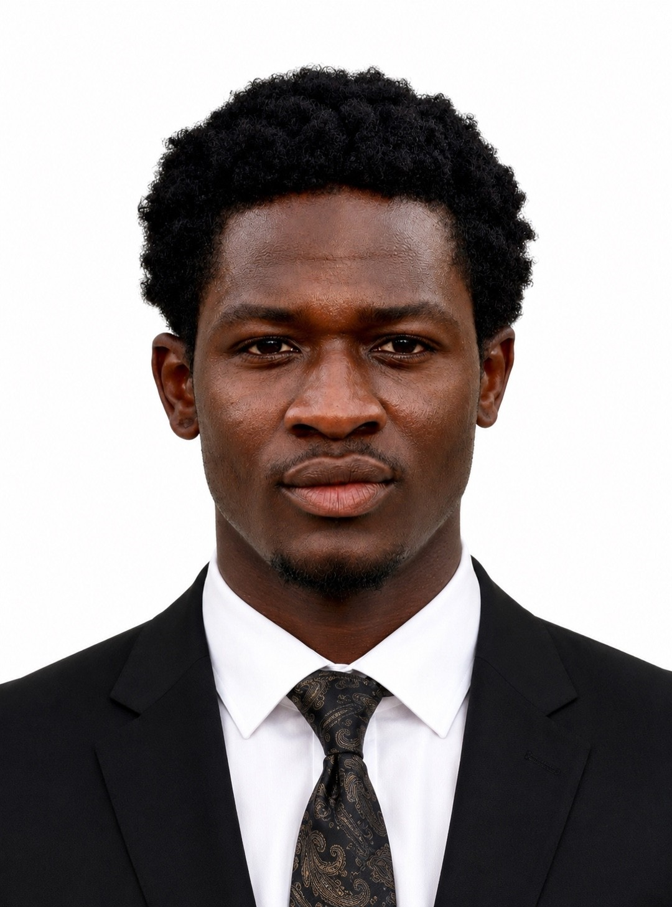

Frontend foundations
Building responsive web experiences with HTML, CSS, and JavaScript, with accessibility and clarity in mind.
Frontend development · Cybersecurity
I'm Nehemiah, a frontend developer interested in making the web clearer, more useful, and more secure.
Based in Nigeria Open to thoughtful projects

Selected work
A few things I've been building and learning from.
My Journey
A growing practice that brings thoughtful interfaces and security together.
Building responsive web experiences with HTML, CSS, and JavaScript, with accessibility and clarity in mind.
Expanding my view of the web through secure coding, application testing, and security tools.
Combining both disciplines to make digital experiences useful, reliable, and safer to use.
How I think
I bring frontend development and cybersecurity together, with an eye for responsive layouts, accessible interactions, and the details that help people trust what they use.
More about my approachCurrent Focus
Secure frontend practicesApplying security thinking to everyday interface decisions.
Web application testingLearning how to identify and understand common application risks.
Clear, accessible experiencesMaking interfaces easier to use across devices and abilities.
Have something in mind?